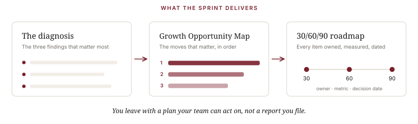

Ways to Work Together
Every engagement closes the Clarity Gap from one side, or both.
Alignment closes it inside. Translation closes it outside. The Clarity Sprint tells you which you need.
The path
Not everyone needs all three. The Sprint tells you which.
The Clarity Sprint · start here
The moment. You can feel it before you can name it. Growth that used to come easily now takes more effort. Your team is busy, hitting its activity targets, and somehow the market still doesn’t quite get you. Every leader describes the company a little differently. Nothing is on fire. But something is off.
What it is. A focused, 30-day outside read on your Clarity Gap, and a diagnosis of which side it’s on. I run stakeholder conversations across leadership and the teams closest to your customers, review how you actually show up in the market, and work through your own numbers and plans.
What you get. A comprehensive read, built so your team can act on it, not a report you file. A leadership summary up top, a central diagnosis with the three findings that matter most, a Growth Opportunity Map that sequences the moves, and a 30/60/90-day roadmap where every item carries an owner, a success metric, and a decision date.

How I work. I come in with structure, not opinions, and I tell you plainly where your Clarity Gap is and what closes it. I deliver a plan: the changes that will move the business, the order to make them, and a working session to align the teams behind them.
Who it’s for. CEOs, founders, and CMOs preparing for the next growth stage: a launch, a capital raise, an acquisition, or a reset.
Go-to-Market Alignment · inside
The moment. Sales tells one story, marketing another, product a third. Everyone’s working hard; no one’s reinforcing the same story. The market feels the seams, often after an acquisition, a reorg, or a stretch of fast growth.
What it is. The internal engagement. I get leadership, product, marketing, sales, customer success, and AI aligned around one market position, using the six-part method.
What you get. One story your whole company can tell, a shared definition of the market you serve, why you win, and how every team reinforces it, so growth stops fighting itself.
Who it’s for. Companies that have split into five versions of themselves and need to realign.
Go-to-Market Translation · outside
The moment. You know your company cold. Your market doesn’t. Your homepage reads like an internal planning doc, prospects can’t repeat back what you do, and you’ve become the best-kept secret in your category, a strong company the market barely notices, or knows only as its outdated version.
What it is. The external engagement, and the side of this I’m known for. I deconstruct your go-to-market and rebuild it into a message and a customer relationship the market values, by divorcing the story from internal language and putting it in your customer’s words.
What you get. A go-to-market your customers understand in thirty seconds: positioning, message, and a relationship built on what the customer values, not on your feature list. You stop being invisible.
How I work. I start from your customer, not your roadmap: strip the internal language, find the one thing that makes the right buyer care, and rebuild the story where they’ll meet it.
Who it’s for. Strong companies that are somehow still invisible to the market they’re built for.
Email & Lifecycle · the specialty
The moment. Email should be your highest-ROI channel, and for most companies it isn’t. Deliverability is slipping, engagement has gone flat, you’re using a fraction of the platform you pay for, there’s a migration you’ve been dreading, or the program is technically fine but it speaks your language instead of your customer’s. Email is the one channel where you can do everything right and still leave most of the money on the table.
What it is. The Clarity Gap, applied to the channel I know best. The same principle runs through all of it: the program has to talk to your customer, not to your roadmap. I lead email and lifecycle strategy, journey and program architecture, deliverability, platform selection and migration, and using AI in email without breaking what works, grounded in a clear customer strategy before we touch a single send.
Email is also the easiest place to start. It’s a contained, high-ROI problem I can move on fast, and the gap it exposes is rarely just email. A lot of the bigger work begins here.
How I work. Strategy before tactics, even here. I start with who your customer is and what they need to hear, then build the program to match. This is the core of my work, each plan built by me, drawing on nearly three decades of marketing leadership. When it calls for a specialist, I bring in a proven one from the network.
Why me. This is the work I’m known for: nearly three decades in email and lifecycle, 2023 ANA Thought Leader of the Year, Chairman emeritus of the Email Experience Council, and 100-plus columns for MarTech. I’m fluent across the major platforms, Salesforce Marketing Cloud, Braze, Iterable, Klaviyo, and the rest, so I’m not learning your stack on your dime.
Who it’s for. Teams that know email should be doing more, companies mid-migration or weighing a platform decision, and leaders who want a recognized authority in the channel, not another agency learning on the job.
Selected engagements
What this looks like in practice.
Alignment · inside
The leadership team was too close to see it. Each of them could describe their own corner of the business perfectly, and together they still couldn’t agree on why growth had stalled. In a focused 30-day read, interviewing fourteen people from inside the business across sales, marketing, operations, and finance, reviewing the company’s own recorded sales calls, and working through its data, I did the one thing none of them could do from the inside: I looked at the whole board at once. What they’d taken for a marketing problem was really an alignment problem. I gave them one leadership-level picture of it: the three findings that mattered most, the moves in priority order, and a 30/60/90-day roadmap where every item carried an owner, a metric, and a decision date. Once it was named, the way forward was a sequence, not a mystery. They walked out with a plan, not a report to file.
Translation · outside
When Ashley took over marketing at her family’s printing and mailing company, it was rebranding to a bolder name, mailing.com, and it couldn’t say what made it different. Its selling points were the generic ones every competitor could claim. I came on as her fractional CMO and started at the root: we built the company’s real unique selling points, the things only it could own. That became the spine for everything downstream, the sales team’s talking points, the website, the content, the entire go-to-market, all of it finally telling one consistent story instead of five. Ten years later I’m still her advisor, having helped her carry that clarity through the company’s growth, an acquisition by a larger player, and into the bigger role she holds today.
How the work gets delivered
A fixed engagement, a fractional seat, or hands-on execution.
The Clarity Sprint is a fixed, defined-length engagement. Alignment and Translation can run as a defined engagement, as an ongoing fractional CMO / market-strategy partnership where I hold the clarity as you grow, or as hands-on execution where I do the work, positioning, messaging, website, email and lifecycle, CRM and martech, AI strategy and governance.
You get me, and the right people when you need them. Everything starts and ends with me: your senior point of accountability from the first conversation to the last deliverable, never a pitch followed by a hand-off to juniors. When the work calls for a specialist, I bring in a proven one from nearly three decades of relationships, matched to your problem. The Strongbow Group is the shingle. The work is mine.